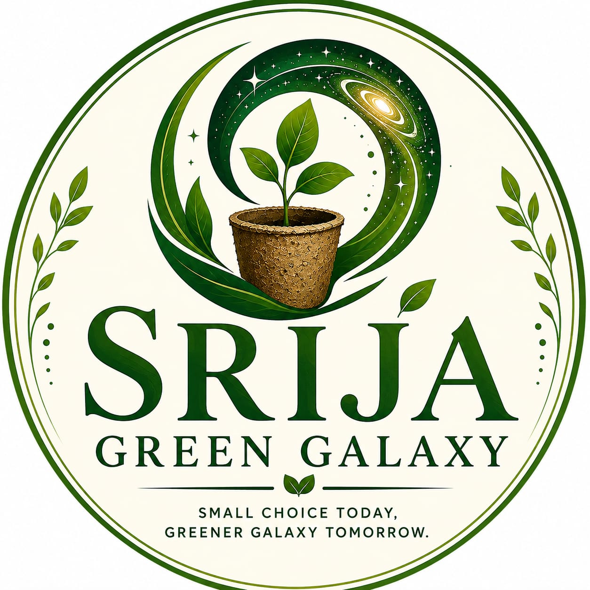
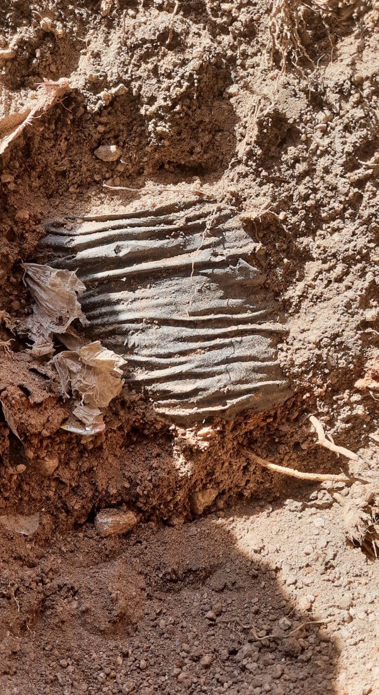

Turning Agricultural Waste into a Greener Tomorrow
OUR PURPOSE
We believe agricultural waste can become the starting point for a more sustainable future.
To create a greener future by transforming agricultural waste into sustainable, value-added products that benefit the environment, communities and future generations.
To convert agricultural waste, especially groundnut shells, into innovative and eco-friendly products that reduce waste, promote sustainable alternatives to plastic, create value for farmers and communities, and contribute to a circular economy.
WHAT DRIVES US
The principles that guide our innovation, decisions and commitment to a greener future.
Building solutions that create lasting value for people, agriculture and the planet.
Transforming agricultural waste into practical, value-added and sustainable products.
Creating opportunities and value for farmers, workers and local communities.
Promoting responsible resource use, reducing waste and encouraging sustainable alternatives.
OUR JOURNEY
A journey that began with one simple observation and grew into a mission to create sustainable solutions.

ZPHS Chintalakunta
While digging a pit to plant a sapling, we found a black polythene nursery bag buried in the soil.
That simple observation raised an important question about how we could encourage planting while also reducing the waste left behind.
The discovery of buried plastic during tree planting made us think about the environmental impact of conventional nursery bags.
We began looking at two connected challenges — persistent plastic waste and agricultural waste that could be discarded or burned.
Through experimentation with agricultural residues, groundnut shells emerged as a promising material for developing a sustainable planting product.
Groundnut shells were transformed into Biopots, creating a value-added use for agricultural waste and an alternative planting solution.
Today, Srija Green Galaxy continues to explore sustainable products that give agricultural waste a productive second life.
MEET OUR TEAM
A team working together to transform agricultural waste into sustainable possibilities.
FOUNDER & DIRECTOR
Student Innovator
Founder and Director of Srija Green Galaxy, working on sustainable innovation, research, product development and outreach.
DIRECTOR
Biopot Manufacturing
Responsible for manufacturing and production activities, helping transform agricultural waste into useful sustainable products.
CO-FOUNDER & DIRECTOR
Procurement & Sales
Supports raw-material procurement, customer relationships and sales activities for the organization.
Official company information and registration details.
Explore our sustainable journey and discover how agricultural waste can create new possibilities.
DOWNLOAD COMPANY PROFILE Connect With Us